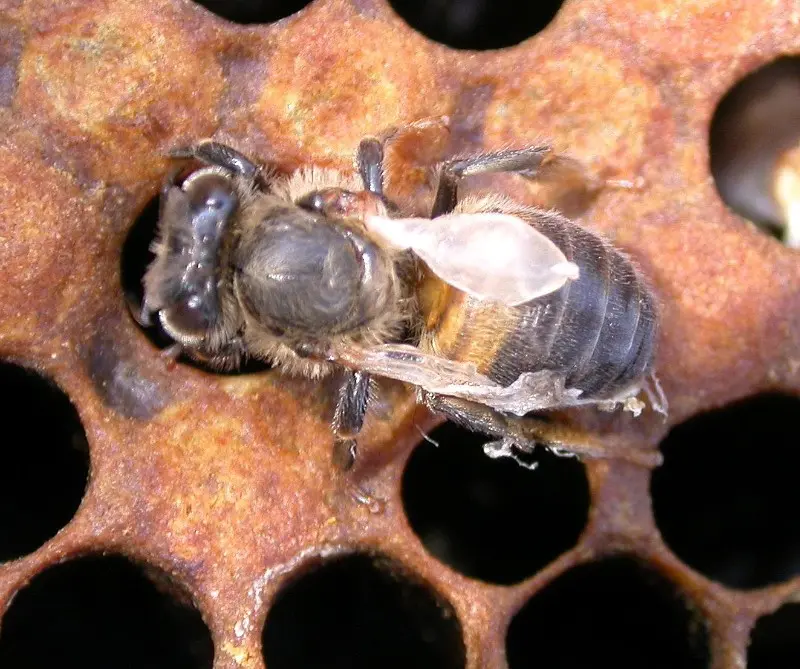
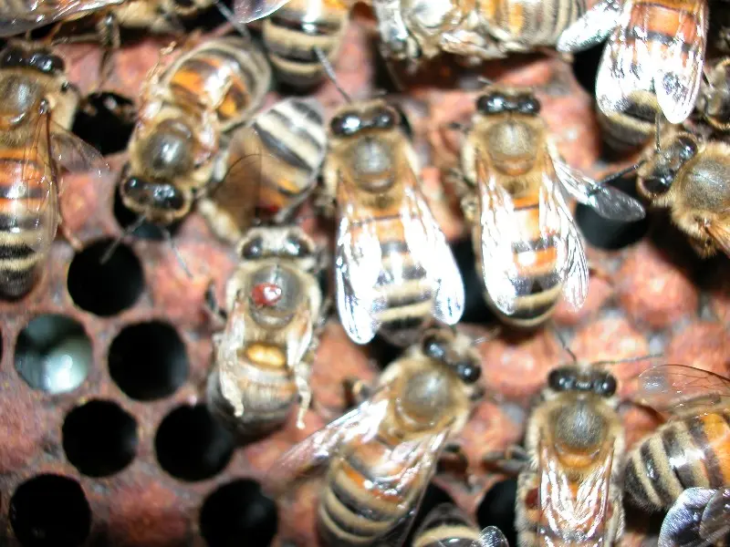

Bee Diseases & Varroa-Linked Viruses
Deformed Wing Virus (DWV) in Honey Bees
Last updated: 1 May 2026

Deformed Wing Virus (DWV) is one of the most common and important viral diseases affecting honey bees in the UK. It is closely linked with varroa mite pressure and is often seen when mites have allowed virus levels to build up inside the colony.
Bees affected by DWV may emerge with shrivelled, twisted or shortened wings and may be unable to fly. You may see them crawling outside the entrance, trembling, failing to launch or being removed by other workers.
A single bee with damaged wings does not always mean the colony is collapsing, but repeated sightings are a strong warning sign that varroa and virus pressure need urgent attention.
Key signs of deformed wing virus
- Bees emerging with shrivelled, twisted or deformed wings
- Bees unable to fly properly
- Crawling bees near the hive entrance
- Shortened or abnormal abdomens
- Weak or declining colony strength
- More affected bees seen in late summer or early autumn
DWV symptoms are most concerning when they are regular rather than occasional. If you keep seeing affected bees, check varroa levels and review recent treatment history.
The link between DWV and varroa

DWV may be present at low levels in many colonies, but it becomes far more damaging when spread by varroa mites. Varroa feed on developing and adult bees and can transmit viruses directly into the bee's body.
- Varroa mites reproduce inside brood cells.
- Developing bees can be exposed to high virus loads before emergence.
- Heavily infected young bees may emerge weak, damaged or unable to fly.
- High DWV levels can shorten worker lifespan and weaken the colony.
This is why visible DWV is usually treated as a varroa warning sign. The virus is the symptom you can see, but mite pressure is often the bigger management issue behind it.
How serious is DWV?
DWV can be very serious because it affects the working population of the colony. Bees with deformed wings cannot fly properly, cannot forage effectively and are unlikely to live a normal lifespan.
- It can indicate high varroa levels.
- It reduces the useful lifespan of worker bees.
- It can weaken colonies rapidly.
- It can contribute to late-season collapse or winter loss.
DWV is especially serious when it appears during the period when the colony is raising winter bees. Weak, virus-affected winter bees may leave the colony unable to survive through winter.
When is DWV most common?
DWV symptoms are often most noticeable in late summer and early autumn, after varroa numbers have had time to build through the season. This timing matters because the colony is preparing the long-lived bees needed for winter survival.
- Late summer and early autumn
- After varroa levels have built up
- In colonies not monitored or treated effectively
- After reinvasion from nearby collapsing colonies
What to do if you see DWV
- Check varroa levels immediately using your preferred monitoring method.
- Review recent treatment dates and whether the treatment was suitable and completed properly.
- Apply an appropriate authorised varroa treatment if mite levels require action.
- Monitor colony strength and check whether the brood pattern and adult bee population are improving.
- Reduce avoidable stress such as robbing, lack of food or excessive disturbance.
Use the varroa management guide alongside this page, especially if you are seeing DWV near the end of the beekeeping season.
Can a colony recover from DWV?
A colony can recover if action is taken early and varroa levels are brought under control before too much damage has been done. New healthy bees can replace affected workers if the queen is laying well and the colony still has enough strength.
Recovery is much less likely if the colony is already heavily weakened, has a failing brood pattern, or is raising poor-quality winter bees late in the season. In those cases DWV may be part of a wider varroa collapse pattern.
DWV vs other causes of crawling bees
Crawling bees are not always caused by DWV. Look at the full pattern of symptoms, timing and colony condition before deciding what is most likely.
How HiveTag can help
Deformed wing virus is easier to manage when you can see the history behind it. Recording varroa checks, treatments, colony strength and unusual bee behaviour helps you spot whether a problem is building before visible symptoms become widespread.
HiveTag can be used to record inspections, treatment dates, mite counts, weak colony notes and seasonal reminders so that DWV signs are not viewed in isolation.
Deformed Wing Virus FAQ
Varroa does not create DWV, but it spreads the virus very effectively and can make infections far more severe.
Individual bees with badly deformed wings usually do not survive long, but the colony may recover if varroa levels are reduced early enough.
Not usually. The priority is to assess varroa pressure, treat appropriately if needed, and judge whether the colony still has enough strength to recover.
Yes. It can spread through drifting bees, robbing and varroa movement between colonies, which is why apiary-wide varroa control matters.
Image credits
Disease reference images on this page are courtesy of The Animal and Plant Health Agency (APHA), Crown Copyright.